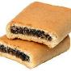

We are hosted by Newtfire.org. This project was designed for the Spring 2017 Coding and Digital Visualization course, part of the Digital Studies Certificate.
Team Members
Jon Horanic - Jon Horanic is a 2018 graduate of the University of Pittsburgh at Greensburg with a bachelors degree in English Literature. As a member of this project, he designed the website was responsible for creating the original structural markup of the articles.
Samantha McGuigan - Samantha McGuigan is an April, 2017 graduate of the University of Pittsburgh at Greensburg where she will graduate summa cum laude with a bachelors degree in Communication, a minor in English Literature, and a Digital Studies Certificate. She helped with marking up the articles for emotional language. She also created the network visualizations with Cytoscape.
Aaron Newton - Aaron Newton is a 2019 graduate of the University of Pittsburgh at Greensburg with a bachelors degree in Information Technology. He helped creating SVG bar graph visualizations and worked on marking up quotations in the articles.
